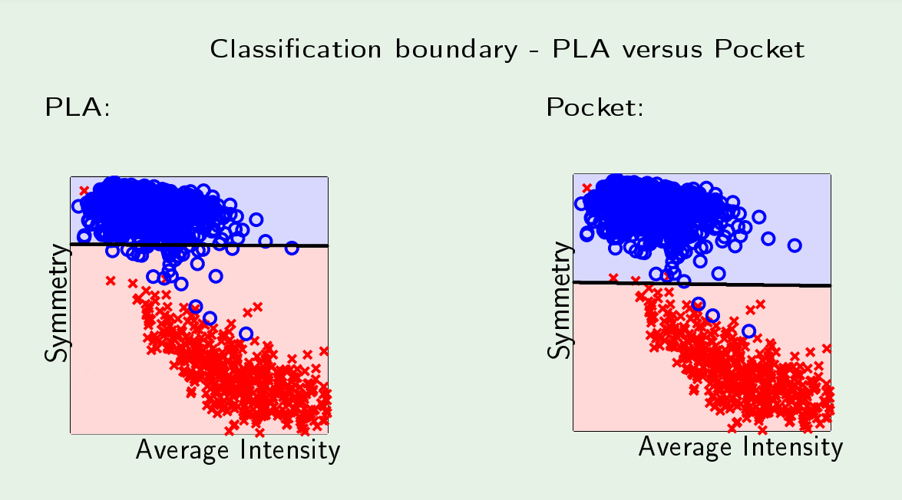

感知器学习算法的数据集是可分的，所以每次迭代的误分类数最终收敛到0。如果数据集不可分，会遇到问题， 更新功能永不停止 最终输出并不能保证样本内误差是最优的，

口袋算法（Pocket Algorithm）是一个二元分类算法，将一个数据集通过线性组合的方式分成两种类型。
这个算法将迄今为止看到的最好结果保存在它的口袋里（这就是它被称为口袋学习算法的原因）。
最好的结果意味着错误分类的数量最少。如果新权重产生的错误分类数量少于口袋中的权重，则将口袋中的权重替换为新权重；如果新的砝码不比口袋里的好，把那个放在口袋里并丢弃新的砝码。在训练迭代结束时，算法返回口袋中的解，而不是最后的解。